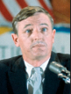

John Lindsay
Party: Republican
Bio: Running as a liberal Republican promising to fight political machine corruption and combat urban neglect.
Party: Republican
Bio: Running as a liberal Republican promising to fight political machine corruption and combat urban neglect.
Party: Democrat
Bio: Emphasizing fiscal responsibility and finanical managment experience.

Party: Conservative
Bio: Running as a conservative outsider promising to restore law and order and challenge liberal policies.